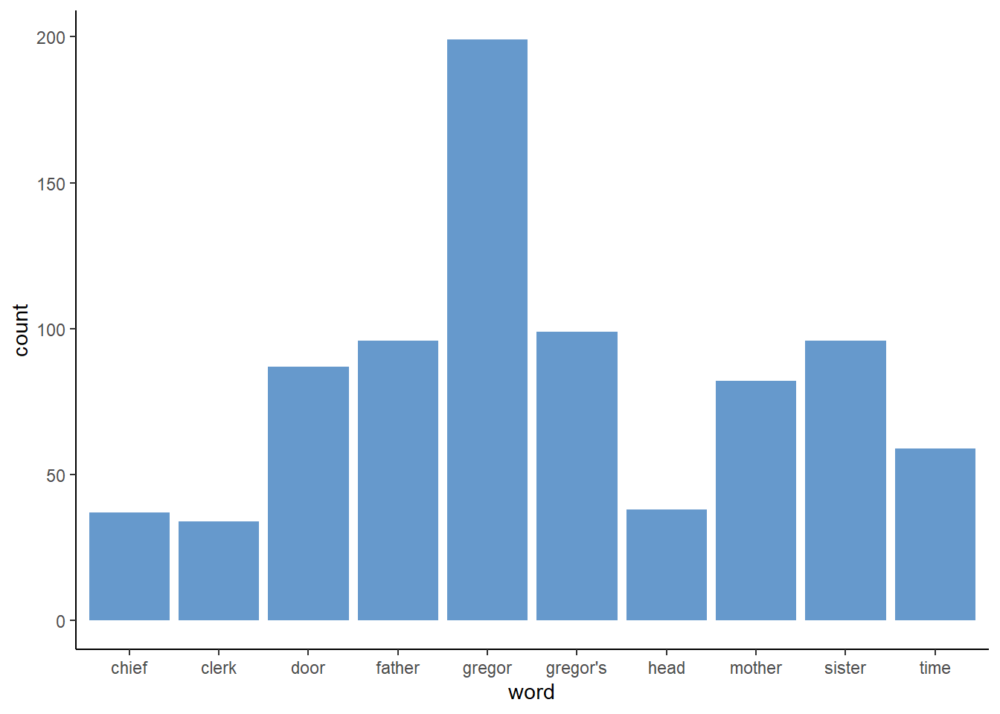
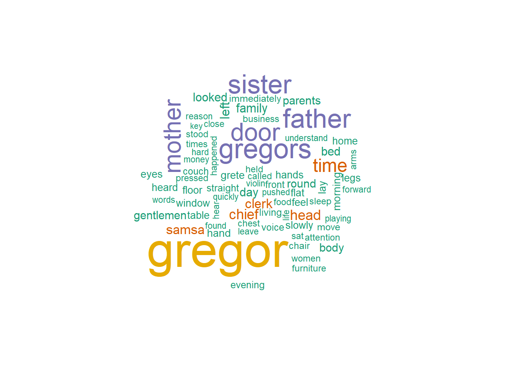
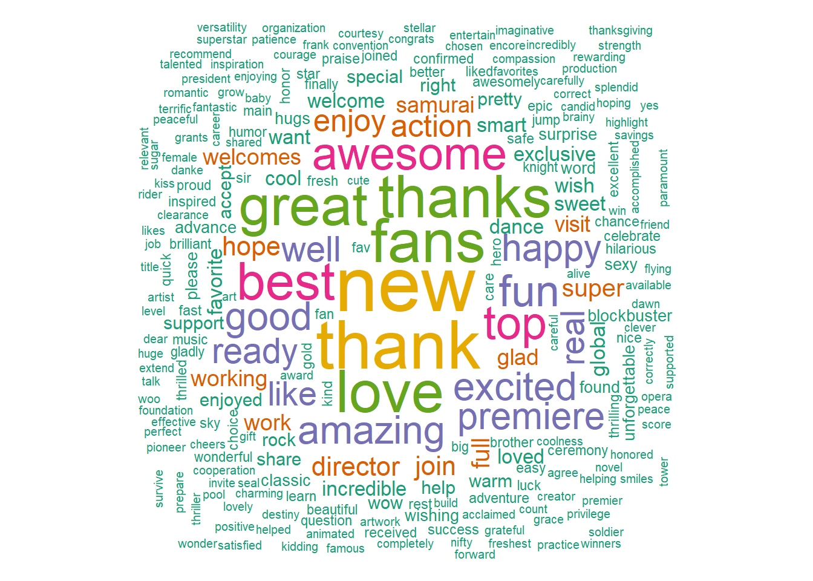

The first step in any data science project should always be to get a sense of your data. For NLP, a lot of exploratory data analysis revolves around counting the frequencies of different terms and plotting them in different ways. This can be as simple as a bar chart looking at the count of distinct words, to word clouds, to something as complex as a TF-IDF.
Before we go any further, we first need to set up our workspace. We will primarily be working with tidytext to keep ourselves in the tidyverse and will be pulling data from gutenbergr, which is a repository of free classic texts. Let’s start by loading in our data, Metamorphosis by Kafka, and unnesting it into tokens.
library(gutenbergr)
library(wordcloud)
library(ggplot2)
library(tidytext)
library(dplyr)
library(kableExtra)
meta = gutenberg_download("5200")
tokens = meta %>%
unnest_tokens(word, text) %>%
anti_join(stop_words) Next we can create a simple bar plot looking at the top ten words (not including stop words of course) used in the book.
word_count = tokens%>%
group_by(word)%>%
summarise(count = n())%>%
arrange(desc(count))%>%
slice(1:10)
ggplot(data = word_count)+
geom_bar(aes(x = word, y = count), stat = "identity", fill = "#6699cc")+
theme_classic()
Another way to present summary statistics is with a word cloud. For the uninitiated, a word cloud is just a collection of words with the size of the word determined by its prevalence. The natural disadvantage of this is that longer words will appear larger than smaller words, thus making them look more prevalent.
Actually creating the wordcloud is very easy. Just wrap a character vector in wordcloud(). We can remove some of the less frequent words using either the min.freq argument or the max.words argument.
wordcloud(tokens$word, max.words = 75, colors=brewer.pal(6, "Dark2"))
So far, we have looked at simply counting words and displaying this information in interesting ways. Next we will try to contextualize this information by observing how frequent words are in a document in comparison to other words.
TF-IDF, or Term Frequency and Inverse Document Frequency, is a way to numerically give importance to a word or phrase in a given text document relative to a collection of text documents.
In this example, we will examine how important a word is in a chapter of Metamorphosis in comparison to the entire novel. Our dataframe ‘meta’ contains the text from Metamorphosis; however, there is no column designating chapters in the novel. By looking through the ‘meta’ dataframe, we can see that there are chapter divides at rows 640 and 1296. Let’s start by adding a chapter column to our dataframe, dividing Metamorphosis into its three chapters.
meta$chapter = NA
meta$chapter[1:639] = 1
meta$chapter[640:1295] = 2
meta$chapter[1296:nrow(meta)] = 3
meta <- meta[,2:3]First, we need to create a dataframe that breaks down our text into one word per row using unnest_tokens(). Here, we can count how many times words occur in each chapter. This is our term frequency (tf).
book_words <- meta%>%
unnest_tokens(word, text) %>%
group_by(chapter, word)%>%
summarise(n = n())%>%
arrange(desc(n))
book_words%>%
slice(1:2)%>%
kable()%>%
kable_styling("striped")| chapter | word | n |
|---|---|---|
| 1 | the | 386 |
| 1 | to | 251 |
| 2 | the | 382 |
| 2 | to | 254 |
| 3 | the | 380 |
| 3 | and | 253 |
Term frequency alone can tell us which words or phrases occur the most in a given document or collection of documents. This is helpful to some extent; however, some of the words or phrases with the highest term frequency may not be that important, or rather they may not give us much insight into what the document or collection of documents is about. In this example, we can see that “the” is the most frequent term in each chapter, giving us no insight into the contents of these chapters.
To fully illustrate this, let’s see how common words are across the entire book compared to any given chapter.
meta%>%
unnest_tokens(word, text) %>%
group_by(word)%>%
summarise(book_count = n())%>%
arrange(desc(book_count))%>%
right_join(book_words, by = "word")%>%
select(word, chapter, chapter_count = n, book_count)%>%
ungroup()%>%
slice(1:10)%>%
kable()%>%
kable_styling("striped")| word | chapter | chapter_count | book_count |
|---|---|---|---|
| the | 1 | 386 | 1148 |
| the | 2 | 382 | 1148 |
| the | 3 | 380 | 1148 |
| to | 2 | 254 | 753 |
| and | 3 | 253 | 642 |
| to | 1 | 251 | 753 |
| to | 3 | 248 | 753 |
| he | 1 | 230 | 577 |
| and | 2 | 206 | 642 |
| his | 2 | 206 | 550 |
Where the term frequncy shows how common a word is the inverse document frequncy discounts words for being common across documents.
Mathematically, the IDF (inverse document frequency) of a word in a collection of documents can be understood as:
idf(word) = ln(total number of documents / number of documents containing word)
It may have been a minute since you took a math class, so let’s take a step back and think about what that natural log (ln) is doing there. The natural log (ln) can be thought of as the amount of time it takes something to grow exponentially from one. So ln(1) will be 0, since it takes no time to get to where you currently are.
In other words, if a word appears in all three documents it will have an IDF of 0. The more common the word across documents, the more it is discounted. This is in fact a good method to find context-specific stop words in a collection of documents. Words that appear frequently in every document (and have an IDF score of 0) may be good candidates for stop words.
Because you multiply the term frequency and the inverse document frequency together, in practice, this means that the TF boosts common words within a document, and the IDF discounts words that are common across documents.
Of course in R we can do all of this in one function. The bind_tf_idf() function gets the TF, IDF, and TF-IDF scores for each word in our dataset.
book_words.2 <- book_words %>%
bind_tf_idf(word, chapter, n)
book_words.2 %>%
arrange(desc(tf_idf)) %>%
mutate(word = factor(word, levels = rev(unique(word)))) %>%
group_by(chapter) %>%
slice(1:10) %>%
ungroup() %>%
ggplot(aes(word, tf_idf, fill = chapter)) +
geom_col(show.legend = FALSE) +
labs(x = NULL, y = "tf-idf") +
facet_wrap(~chapter, ncol = 2, scales = "free") +
coord_flip()+
theme_classic()
Looking at the words with the highest TF-IDF scores in each chapter, we can see which words are more important to individual chapters. Gregor Samsa is one of the main characters in this novel. The term “Gregor” occurred too frequently throughout the entire book. However, his last name, “Samsa,” was probably not used as often since we can see it has the highest TF-IDF score for chapter 3.
From this, we could make some guesses as to what the chapters in this book are about. Perhaps milk was spilled on the couch and someone needed money to buy new furniture in chapter 2.
The only way to know for sure would be to read the book, but this is of course more time efficient.
(You should still read the book – it’s quite good!)